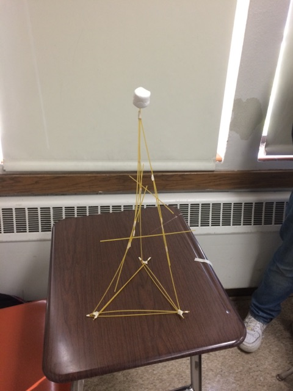

Agile methodology
speaker:

Plan
Part 1 - Agile methodology : What is it?
Part 2 - Most used methodologies
Part 3 - Agile practices
Part 1
Agile methodology : What is it?
What?
source: wikipedia[...] A set of principles for software development under which requirements and solutions evolve through the collaborative effort of self-organizing cross-functional teams.[...]
What?
Agile Manifesto: Written and published in 2001.
4 values
- Individuals and Interactions over processes and tools
- Working Software over comprehensive documentation
- Customer Collaboration over contract negotiation
- Responding to Change over following a plan
What?
12 principles
- Customer satisfaction
- Welcome changing requirements
- Frequent delivery
- Continuous attention to technical excellence
- ...
What?
Based on iterative, incremental and evolutionary development lifecycles!
Part 2
Most used methodologies
Most used methodologies
- XP
- SCRUM
- TDD
- BDD
Extreme Programming (XP)
Software development oriented practice
Born between 1996 and 1999
Main objective : reduce costs of changes!
Extreme Programming (XP)
Principles
- Code review is mandatory
- Pair Programming
- Use of TDD
- Always choose the simplest solution!
- Several commits per day
- Fast development cycles
Extreme Programming (XP)
The customer creates scenarios which are then split into tasks by the dev team.
Iterations continue as long as the customer can provide more scenarios.
Extreme Programming (XP)
Values
- Communication
- Simplicity
- Feedback
Extreme Programming (XP)
How to
XP uses planning poker, continuous integration, small deliveries (no overtime! overtime means bad planning!)
problems
resistance to change, big team, feedback too long or too hard to get...
SCRUM
Born between 1995 and 2001
Can be seen as a framework instead of a methodology.
product backlog predictability and sprint immutability are against the Agile Manifesto!
Can be used for almost anything (even a wedding!)
SCRUM
Hail to the Sprint!Short period of time (usually 2 weeks. One month max.)
Contains several steps to follow
SCRUM
- backlog definition with epics and user stories
- Task estimations with story points
- Development, tests and daily scrum
- Sprint review (what was done)
- Sprint retrospective (what did (not) work / how to improve)
Tasks defined in a sprint cannot be changed during the sprint!
SCRUM
No technical framework so Scrum should be used with other practicies like XP.
SCRUM
Product Owner
- He knows the customer needs
- The dev team only listen to him
- Should be always available for the dev team
- Should be present at each daily/review/retro
- Can change the product backlog
SCRUM
Scrum Master
- Makes sure Scrum is correctly used
- Can manage several Scrum teams
- Should be present at each daily/review/retro
- Communication with the Product Owner and the dev team
SCRUM
Daily Scrum
15 minutes max.
What was done the day before, what is done today, problems
Any (non) technical discussion must be done AFTER!
SCRUM
- Planning Poker / Team Velocity
- Documentation : as you wish
Test Driven Development (TDD)
source: wikipedia[...] Software development process that relies on the repetition of a very short development cycle[...]
Born in early 2000's
Related to test-first programming concepts of XP!
TDD
lifecycle
- Write a new feature as a unit test
- Run the test and expect it to fail
- Write the smallest amount of code so the test passes
- Refactor the code
- Check the test still passes
TDD
Documentation and specifications are in the tests.
Rules of acceptance must be defined first. (ATDD)
The developer is more confident in case of changes.
Improve code quality (mock, OOP, Single Responsbility Principle, etc.
Behavior Driven Development (BDD)
Combination of TDD and DDD (domain driven design)
Drives development and tests by the expected behavior of the project
Based on DSL (Domain Specific Language)
Behavior Driven Development (BDD)
Makes communication easier between QA, Devs and non-technical teams
Formal language shared by all members of the team
Several frameworks such as Cucumber, RSpec, Capybara (web), JBehave
Behavior Driven Development (BDD)
Uses sentences for test names
As [...] In order to [...] I want to [...]
Given [...] And [...] When [...] Then [...]
Can be based on User stories or specifications
Behavior Driven Development (BDD)
Article: Introduction to BDD
Part 3
Agile practices
Spaghetti Marshmallow Challenge
Spaghetti Marshmallow Challenge
Goal: Build the highest spaghetti tower with a marshmallow at its top!
Goal: Prove that iterations and tests are better than planification!
Retrospective Games
Keep / Drop / Start